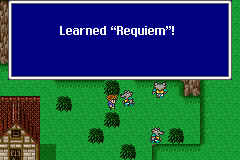
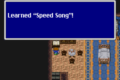
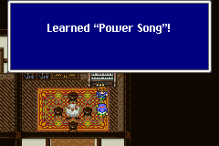

Song
อาชีพ "Bard" สามารถใช้ Song ได้
ซึ่ง Song สามารถเรียนรู้ได้จากนักกวี ตามสถานที่ต่างๆ ในโลก
* Note : กดที่ชื่อเพลง หรือชื่อเปียโน เพื่อดูรายละเอียด
Love
Song
คุยกับนักกวีในหมู่บ้าน Istory โดยต้องโดนแกะเตะผ่านออกไปนอกรั้ว

Charm
Song
เล่นหีบเพลงเก่าในบ้านของ Butz ที่หมู่บ้าน Lix แล้วคุยกับนักกวี

Life
Song
คุยกับนักกวีในหมู่บ้าน Crescent
Requiem
Song
คุยกับมนุษย์หมาป่าในหมู่บ้าน Kelb (Galuf's World)

Speed
Song
อ่านหนังสือในห้องนอนของ Zeza ในปราสาท Surgate (Galuf's World)

Magic
Song
ชั้นบนสุดของห้องสมุด (Real World)

Power
Song
เล่น Piano ที่บ้านของนักกวีในหมู่บ้าน Crescent (Real World)
หากเล่น Piano มา 7 หลังแล้ว คุยกับนักกวี จะได้รับ Power Song

Hero
Song
เล่น Piano ที่บ้านของนักกวีในหมู่บ้าน Crescent (Real World)
หากเล่น Piano มาครบ 8 หลังแล้ว คุยกับนักกวี จะได้รับ Hero Song
Piano
เมื่อเล่น Piano ตามสถานที่ต่างๆ จะได้รับรางวัลจากนักกวีในหมู่บ้าาน
Crescent
ตำแหน่งที่ตั้งของ Piano ตามสถานที่ต่างๆ มีทั้งหมด 8 หลัง ดังนี้
Piano01
อยู่ที่ Pub ในหมู่บ้าน Tule

Piano02
อยู่ที่ Pub ในหมู่บ้าน Carwen
Piano03
อยู่ที่ Pub ในหมู่บ้าน Kanak

Piano04
อยู่ที่ Pub ในหมู่บ้าน Jacole

Piano05
อยู่ที่บ้านนักกวีในหมู่บ้าน Crescent
Piano06
อยู่ที่ Pub ในหมู่บ้าน Rugor (Galuf's World)

Piano07
อยู่ที่ Pub ในหมู่บ้าน Mua (Galuf's World)

Piano08
อยู่ภายในหมู่บ้าน Mirage (Real World)